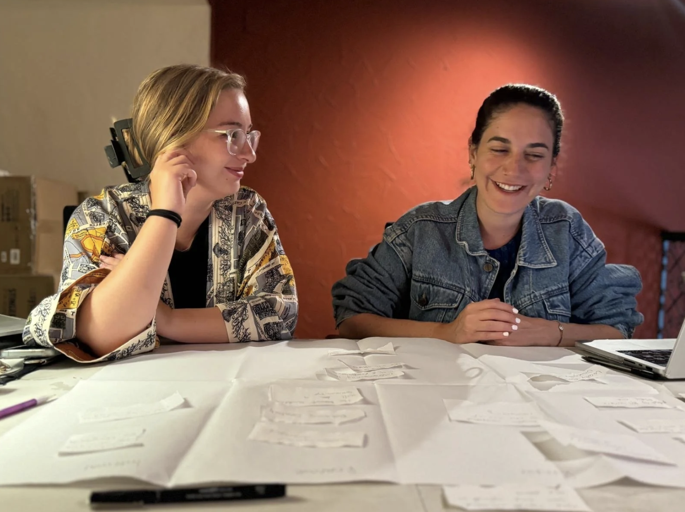

Publications, speaking, media features, and recognition — the public trace of a practice built at the intersection of imagination, healing, and civic futures.
This is precisely the time when artists go to work. Not when everything is fine, but in times of dread. There is no time for despair, no place for self-pity, no need for silence, no room for fear. We speak, we write, we do language. That is how civilizations heal.
— Toni Morrison
